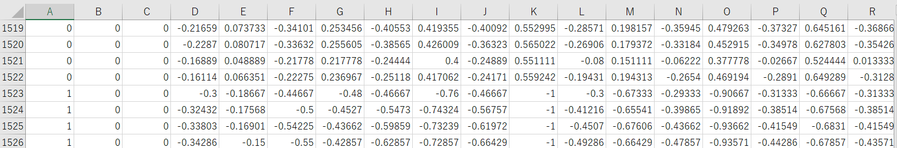

Ferramenta computacional para interação na comunicação com Libras

Você já passou por alguma situação de não poder se comunicar com uma pessoa surda por não saber Libras?
Essa é uma dor muito frequente na faculdade a qual frequento, há diversos alunos surdos que muitas vezes
estão sem intérprete, impossiblitando a comunicação com os mesmos.
Foi pensando nisso que decidi desenvolver uma ferramenta capaz de traduzir os sinais de Libras para o português. Para que seja acessível todos, é muito importante que sejam usadas apenas ferramentas que qualquer pessoa possua em casa, como um notebook/computador com webcam ou um celular.
Vídeo do projeto sendo utilizado po surdos na Expo Indústria 2022:
Funcionamento
A ideia principal do projeto desenvolvido trata-se da captação dos pontos-chave da mão quando um sinal de Libras for feito e armazena-los em um arquivo
.CSV que será usado para treinar uma rede neural capaz de reconhecer pontos-chave e classificá-los.

Para captar os dados, foi criado um programa no qual a pessoa faz um sinal de mão e aperta um botão do teclado
para armazenar os dados. A primeira coluna armazena o número usado como ID de classe, as colunas subsequentes armazaenam as coordenadas do ponto-chave.

É importante lembrar que a normalização dos dados é um ponto crucial para o funcionamento do nosso modelo. Como serão assimiladas as coordenadas
relativas à resolução do vídeo captado, o mesmo sinal feito em pontos diferentes da tela serão coisas completamente diferentes, com a normalização
buscamos manter os valores entre -1 e 1 e assim padronizar o sinal independente do lugar que esteja na tela.
Estrutura do Modelo
Imagem do modelo preparado neste projeto é a seguinte:

Precisão
Matriz de confusão do algorítmo de classificação desenvolvido:

É notório que há um bom desempenho na classificação dos sinais treinados, até mesmo no muito semelhantes como "T" e "F".